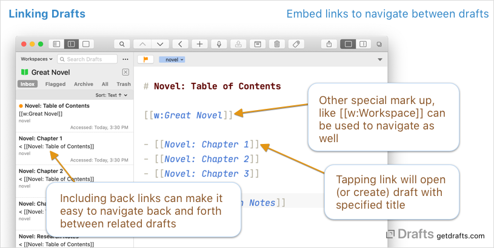

Linking and Cross-Linking Drafts
Table of Contents
- Draft Links (URLs)
- Wiki-Style Cross-Linking Drafts
- Creating and Using Wiki-Style Links
- Linking to Markers Within a Draft
- Wiki-Style External Links
Draft Links (URLs)
Each draft has a unique link (URL) which can be used to open Drafts to a specific draft document. These links are unique to your personal installation of Drafts, but are cross-platform and will work on iPhone, iPad or Mac.
The unique link for a draft can be accessed by several methods:
- In the (i) Draft Detail screen, there are options to copy the link for the draft to the clipboard.
- Context (secondary click) menus offer options to copy the link to the clipboard.
- Using the
permalinkproperty of a draft in scripted actions.
Drafts links can used anywhere URLs can be opened. They can be pasted into other drafts, and used in combination with Link Mode, saved in other applications (along with related tasks in a task manager, for example), or even pasted into a web browser.
Drafts links use the /open URL scheme and can also be manually constructed utilizing the following format:
drafts://open?uuid=UUID-OF-DRAFT
Wiki-Style Cross-Linking Drafts
Drafts syntax highlighting supports ways to create linked text with markup in the text of a draft. When this markup is typed in a draft, the text becomes a tap/clickable link which will open an associated URL.
This feature is useful shorthand when cross-referencing drafts within the app.

Available linking markup varies by the syntax selected for a draft, but the three Markdown-based syntaxes which ship with drafts (Markdown, MultiMarkdown, GitHub Markdown) support the following wiki-style markup for linking within Drafts:
[[Title of Draft]]: Open a draft with the specified title. This will search for and open a draft with “Title of Draft” in the first line of the draft. If more than one is found, it will offer to search to help you locate the correct draft - if none is found, it will offer to create a new draft with the first line “Title of Draft” and open it. The search is loose, so would also match a draft with the title “# Title of Draft”.[[d:Title of Draft]]: This format is the same as above, but can be used if it is important to avoid possible conflicts.[[u:UUID-OF-DRAFT]]: Open a draft with the specified UUID. Useful to force linking directly to a known draft. The draft will not be created if it does not exist. Useful in cases where matching by title may not be reliable and specific enough and you would rather link to a specific draft by its identifier.[[w:Workspace Name]]: Open the named Workspace.[[s:Search String]]: Open quick search to a search for the search term/phase used.
Creating and Using Wiki-Style Links
For the most part, the best way to create and use these Wiki-style links is to type them. They are just text. It is also possible to use actions to assist in inserting links, creating linked drafts to the current draft, finding other drafts that link to the current one, etc.
We have built a few example actions in the Examples: Cross-Linking action group available in the directory.
Linking to Markers Within a Draft
Wiki-style links can also be used to link directly to a navigation marker within a longer draft, using the format [[Title of Draft/Marker Name]]. Navigation markers are defined by the syntax definition, and are used by Drafts Navigation features.
The most common use of marker linking would be to navigate directly to a specific header in a Markdown document. For example, a link like [[Title of Draft/Section 1]] would open the Draft titled “Title of Draft”, and scroll directly to a header “# Section 1” (or “## Section 1”, etc.).
Due to the use of the / forward slash character, if you have links to titles which contain a /, it will need to be escaped to function properly. For example a draft titled “Blue / Green” would be linked to as [[Blue \/ Green]].
Wiki-Style External Links
In addition to the embedded Drafts links possible with this syntax, the default Markdown syntaxes also support several external links types:
[[google:Search Term]]: Open link to Google search for “Search Term”[[wikipedia:Page Name]]: Open link to Wikipedia page for “Page Name”[[bear:Title of Bear Note]]: Open a note with the provided title in the Bear notes app (_utilizes Bear’s /open-note URL action).[[url:http://full.url.com/]]: Open the URL provided. Should be a fully-qualified URL.